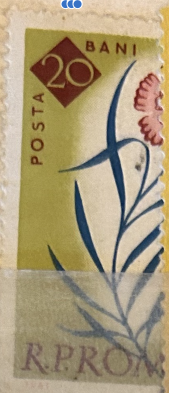
| SOURCE | TITLE| IMAGE MATCH | click to source page |
| eBay UK | ROMANIA 1961 - DIANTHUS CALLIZONUS - FINE 20 bani STAMP MH | eBay UK | 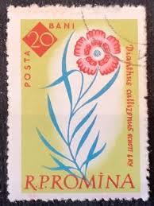 |
| Dreamstime.com | ROMANIA - CIRCA 1961: a Stamp Printed in Romania Shows Piatra Craiului Pink Dianthus Callizonus, Circa 1961. Editorial Image - Image of 1961, park: 222981020 | 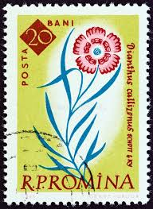 |
| Dreamstime.com | Pink 1961 Barbie Jeep at the 32nd Annual Naples Depot Classic Car Show Editorial Photo - Image of historical, transportation: 144952556 | 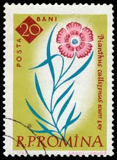 |
| Shutterstock | Romania 1961 September 15 20 Bani Stock Photo 2330652623 | Shutterstock | 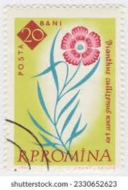 |
| Shutterstock | Kings Clove Dianthus Callizonus Flower On Stock Photo 2634053495 | Shutterstock | 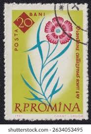 |
| Dreamstime.com | Callizonus Flower Stock Photos - Free & Royalty-Free Stock Photos from Dreamstime | 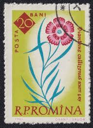 |
| Alamy | ROMANIA - CIRCA 1961: stamp printed by Romania, shows G. Doja, I. Vlad, circa 1961 Stock Photo - Alamy | 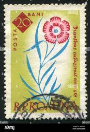 |
| Dreamstime.com | King S Clove Dianthus Callizonus Flower on a 1961 Romania Postage Stamp Editorial Image - Image of flora, postage: 383927315 | 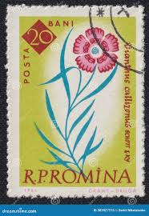 |
| BidCurios | Romania - Used stamp - 1961 - Botanical Garden, Bucharest - Flowers - (B-04/F8)c - BidCurios | 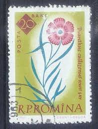 |
| BidCurios | Page 33 – BidCurios | 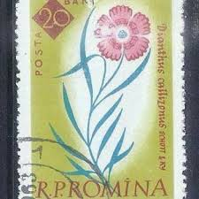 |
| Shutterstock | 1960 Flowers: Over 1,056 Royalty-Free Licensable Stock Photos | Shutterstock | 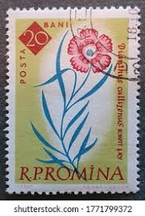 |
| Dreamstime.com | Dianthus UK Postage Stamp editorial image. Image of group - 85211015 | 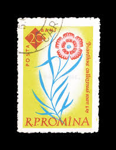 |
| Dreamstime.com | Rumania Alrededor De 1961 : El Sello Muestra La Planta Florida Piatra Craiului Dianthus Callizonus Fotografía editorial - Imagen de pétalo, polen: 301565517 | 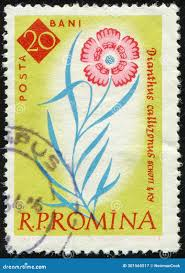 |
| Shutterstock | Vintage Dianthus Flowers: Over 2,270 Royalty-Free Licensable Stock Photos | Shutterstock | 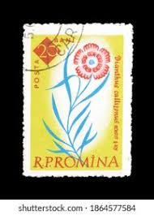 |
| eBay | Mint Never Hinged/MNH Romanian Postal Stamps for sale | eBay | 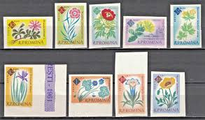 |
| Etsy | Romina Flowers Stamps Earrings Old Vintage Design Ephemera - Etsy | 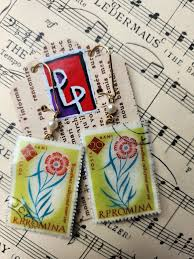 |
| Amazon.com | Amazon.com: Romania 2020A-2028A (Complete.Issue.) fine Used/Cancelled 1961 100 J. Botanical Garden (Stamps for Collectors) Plants/Mushrooms : Toys & Games | 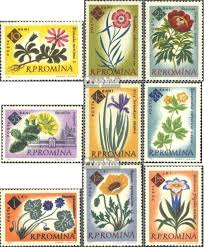 |
| HipStamp | Search "Lebanon 1964" / HipStamp | 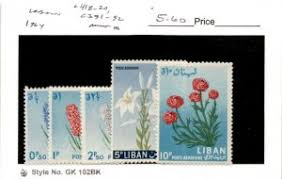 |
| eBay | Romania 1961 MNH Imperf Sc 1459-1467 Mi 2020B-2028B Botanical Garden, flowers ** | eBay | 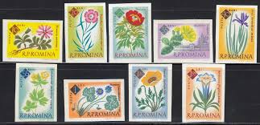 |
| buyhungarianstamps.com | 38-43 Uzbekistan - Flowers (MNH) – Eastern Europe Postage Stamps | Hungaria Stamp Exchange | 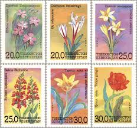 |
| stamps-plus.com | Stamps Plus | Flowers | 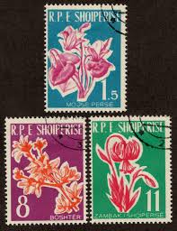 |
| eBay | Pictorial Albanian Stamps for sale | eBay | 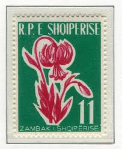 |
| eBay | Romania 1961, Centenary of the Botanical Garden, Bucharest set MNH, Mi 2020B-28B | eBay | 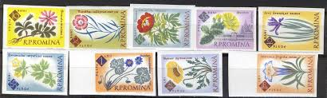 |
| eBay | Algeria Flowers 1973 MNH-9 Euro | eBay | 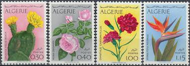 |
| eBay | Czech Republic and Czechoslovakia Flowers Stamps for sale | eBay | 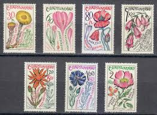 |
| Etsy | Romina Stamps - Etsy | 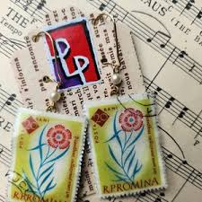 |
| Find Your Stamps Value | Value of green republique francaise 5c stamps | 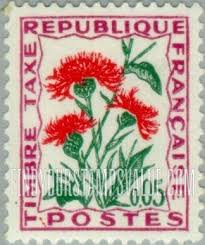 |
| eBay | Single Algerian Stamps for sale | eBay | 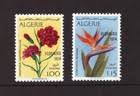 |
| Freestampcatalogue.com | Stamps from Türkiye - Freestampcatalogue.com - The free online stampcatalogue with over 500.000 stamps listed. | 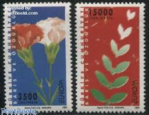 |
| eBay | 101435] Romania 1961 Flora flowers botanic garden Imperf. MNH | eBay | 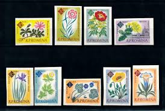 |
| eBay | Albania 633-35, O, Flowers | eBay | 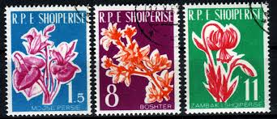 |
| eBay | Flowers First Day Cover Luxembourg Stamps for sale | eBay | 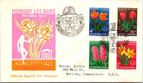 |
| eBay | Original Gum Flowers Russian & Soviet Union Stamps for sale | eBay | 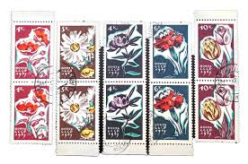 |
| Todocolección | sb) 1960 romania, mushrooms, used, excellent co - Buy Antique stamps of Romania on todocoleccion | 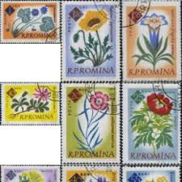 |
| Stamp Auction | Daniel F. Kelleher Auctions, LLC Sale - 2006 Page 107 | 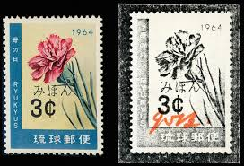 |
| Free stamp catalogue | Stamps from Albania - Freestampcatalogue.com - The free online stampcatalogue with over 500.000 stamps listed. | 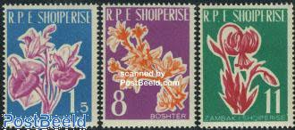 |
| eBay | ALBANIA Sc 595-97 NH ISSUE OF 1961 - FLOWERS | eBay | 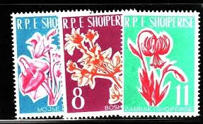 |
| eBay | OOS] Reunion #YTTT48 MNH 1965 Centaur knapweed surcharged [J49] | eBay | 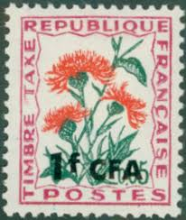 |
| eBay | RUSSIA,USSR:1965 SC#3025-29 Used Flowers | eBay | 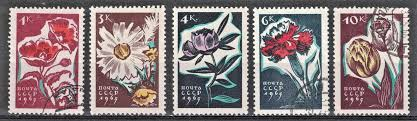 |
| All Numis | 5 Bani - Hotonia palustris, 1966 - Romania - Stamp - 16399 | 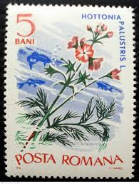 |
| eBay | Albania, Postage Stamp, #595-597 Mint NH, 1961 Flowers | eBay | 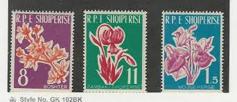 |
| eBay | Algerian Flowers Postal Stamps for sale | eBay | 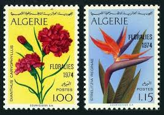 |
| World Stamp Company | Albania — Flowers | 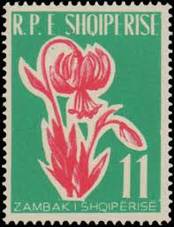 |
| French Philately | 1965 Yt 95 Wildflowers: Centaur knapweed Sc J98 - French Philately - Stamps of France for Sale | 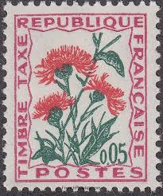 |
| eBay | Romania STAMPS 1961 FLOWERS USED POST MOVED PRINT | eBay | 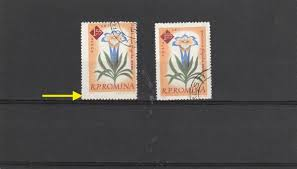 |
| Plants 20 (1966) - GDR - LastDodo | 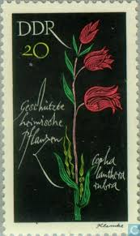 | |
| eBay | Flowers Mint Never Hinged/MNH Unused US Stamps (1941-Now) for sale | eBay | 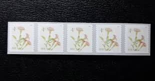 |
| eBay Australia | Flowers United States Stamps for sale | Shop with Afterpay | eBay Australia | 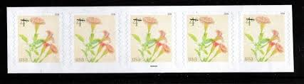 |
| eBay | Turkey 1995 Yvert #2795/96 Europe CEPT MNH VF | eBay | 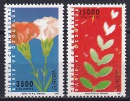 |
| Rutgers University | Stamps - Gentian Research Network | |
| eBay | TIMBRE FRANCE AUTOADHESIF OBLITERE N° 667 / FLEUR / FLORE / L'OEILLET | eBay | |
| Dreamstime.com | A Beautiful New Gentian Blue Porsche Cayman GT4 RS Awaiting Collection by the New Owner. Editorial Stock Image - Image of sport, wheel: 303413144 | |
| HipStamp | Romania 1163: 20b Lilium bulbiferum, used, F-VF | Europe - Romania, General Issue Stamp / HipStamp | |
| HipStamp | Netherlands - 2004 Summer Stamps / Flowers / Plants BLK of 6v Used | Europe - Netherlands & Colonies, General Issue Stamp / HipStamp | |
| eBay | Luxembourg Scott 312, 310 Cover (1956) Used VF Q | eBay | |
| eBay UK | F-EX41050 ALGERIA ALGERIE ARGELIA MNH 1968 FLOWER FLORES. | eBay UK | |
| eBay Canada | 1971 CONGO BRAZZAVILLE FLOWERS STAMPS #237-239 INVESTOR LOT 19 SHORT SETS | eBay | |
| eBay | TURKEY, EUROPA CEPT 1995, PEACE & FREEDOM, MNH | eBay | |
| Discover 120 flower stamps🫶 and postage stamp art ideas | post stamp, vintage stamps, postage stamps and more | ||
| HipStamp | French Colony Reunion Postage Due 1964-71 1fr on 5c MNH** Stamp A20P59F3451- | Europe - France & Colonies, Stamp / HipStamp |